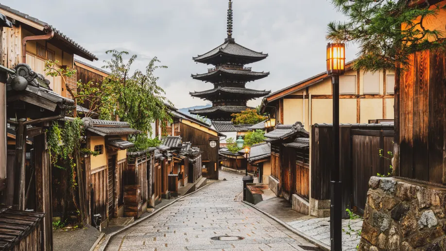

Principales destinos en Japón
Tokio

Tokio, capital del Japón, con sus 14 millones de habitantes se confirma la metrópoli más populosa del país y una de las mayores ciudades del mundo. Su historia se remonta a 1603 cuando Ieyasu Tokugawa estableció el gobierno feudal (el shogunato) y desde entonces goza de un próspero desarrollo. Tokio se identifica como el centro político, económico y cultural de Japón y, en base a la subdivisión administrativa del territorio, se divide en 23 distritos que incluyen 26 ciudades, 5 ciudadelas y 8 aldeas.
Kioto
Kyoto es una ciudad situada en una cuenca rodeada de montañas al Este, Oeste y Norte, con una población de 1,4 millones de habitantes. A diferencia de ciudades urbanas como Tokio y Osaka, no hay edificios altos imponentes que se elevan sobre la ciudad. Aun así, Kyoto es uno de los centros de cultura y aprendizaje en Japón. Kyoto fue la capital de Japón desde el siglo octavo hasta la segunda mitad del siglo 19. Por lo tanto, fue el lugar de nacimiento de la cultura característica del Japón. Artes tradicionales como Kado, el arte del arreglo floral y Chado, la ceremonia del té, surgieron en Kyoto. Trabajos delicados y refinados de arte aplicado nacieron en la cultura de Kyoto, evolucionando hacia artes y artesanías modernas.
Osaka

Osaka está cerca de Tokio en tren bala, pero tiene una personalidad muy diferente a la de la capital japonesa. Bájate del tren bala y descubre una zona con una animada vida nocturna, una gastronomía deliciosa y habitantes simpáticos y abiertos. Además de un montón de tiendas y atracciones modernas, en Osaka también hay lugares de interés histórico, entre los que destaca el Castillo de Osaka, donde conocerás la historia japonesa y podrás pasear por sus jardines, especialmente hermosos durante la época de floración de los cerezos en abril.
Hiroshima
Hiroshima, una ciudad moderna en la isla Honshu de Japón, fue destruida en gran parte por una bomba atómica durante la Segunda Guerra Mundial. Actualmente, el Parque Memorial de la Paz de Hiroshima conmemora el evento de 1945. En el parque, se encuentran las ruinas de la Cúpula Genbaku, uno de los pocos edificios que permaneció en pie cerca de la zona de impacto. Entre otros sitios destacados, se encuentran Shukkei-en, un elegante jardín japonés, y el Castillo Hiroshima, una fortaleza rodeada de un foso y un parque.
Nara
Nara es una de las ciudades más populares de la región de Kansai. Por su localización, resulta perfecta para una excursión de un día desde Kioto u Osaka. O si ya conoces más a fondo estas otras ciudades, puedes dedicarle incluso más tiempo. Pero además fue capital de Japón durante la corte Yamato, antes de que se trasladara a Kioto. Por eso, y al igual que Kioto, Nara todavía conserva el espíritu del Japón tradicional en muchas de sus calles y construcciones.
Miyajima
La isla de Miyajima, situada en la bahía de Hiroshima, es uno de los lugares más famosos de Japón, porque allí se encuentra la famosa puerta torii “flotante”, una de las imágenes más fotografiadas del país. Una imagen muy pintoresca que se produce cuando sube la marea y se cubre totalmente la playa sobre la que está asentado el torii.
Descubre la Fascinante Historia de Japón: Un Viaje a Través del Tiempo
Bienvenidos a un país donde la historia cobra vida en cada rincón: Japón. Sumérgete en un viaje a través del tiempo mientras exploramos la rica y cautivadora historia que ha dado forma a esta nación única. Desde sus antiguos orígenes hasta su transformación en una potencia global, Japón es una tierra de contrastes y tradiciones que te espera para ser explorada.
Los Orígenes Antiguos
Los primeros vestigios de la historia de Japón se remontan a miles de años atrás, cuando las tribus nómadas comenzaron a establecerse en estas tierras fértiles. La cultura japonesa se desarrolló de manera única, con una profunda conexión con la naturaleza y una reverencia por los dioses y los espíritus que habitaban el mundo. Las tradiciones como el sintoísmo, la religión nativa de Japón, aún perduran en la sociedad actual.
Ver másLa Era de los Samuráis y los Shogunes
Un capítulo esencial en la historia japonesa es la era de los samuráis y los shogunes. Durante siglos, los valientes samuráis sirvieron como protectores del país, siguiendo el código de honor del bushido. Este período también vio la consolidación del poder bajo el régimen de los shogunes, líderes militares que gobernaron con mano firme. Descubre la majestuosidad de los antiguos castillos, como el Castillo Himeji, y sumérgete en la historia de intrigas y lealtades.
Ver másApertura al Mundo
En el siglo XIX, Japón dejó atrás su aislamiento y abrazó la modernización y la apertura al mundo exterior. Esta transformación fue un hito crucial en su historia, ya que la nación adoptó elementos de la cultura occidental mientras mantenía su rica herencia. Los emblemáticos Jardines Imperiales y las calles de ciudades como Kioto cuentan historias de esta época de cambio.
Ver másJapón Contemporáneo
Hoy en día, Japón es conocido por su equilibrio entre tradición y modernidad. Desde los rascacielos brillantes de Tokio hasta los templos históricos de Kioto, cada rincón de este país cuenta una parte de su historia en constante evolución. La tecnología de vanguardia se mezcla con festivales tradicionales como el Hanami, la celebración de la floración de los cerezos, que une el pasado y el presente de una manera única.
Ver másEmbárcate en tu Propia Aventura Histórica
Te invitamos a sumergirte en la historia de Japón mientras exploras sus monumentos ancestrales, participas en festivales centenarios y te maravillas con la belleza natural que ha inspirado a generaciones. Ya sea que te sientas atraído por las leyendas de los samuráis, la serenidad de los templos o la deliciosa gastronomía que ha evolucionado a lo largo de los años, Japón te espera con los brazos abiertos.
Planifica tu Viaje a Japón
Prepárate para una experiencia enriquecedora mientras te sumerges en la historia y la cultura de Japón. Explora nuestros itinerarios sugeridos, descubre las gemas ocultas y encuentra la inspiración que necesitas para hacer de tu viaje a Japón una experiencia inolvidable. ¡Te damos la bienvenida a un viaje que te transportará a través de los siglos en una tierra de asombroso legado histórico!
Reserva Ahora